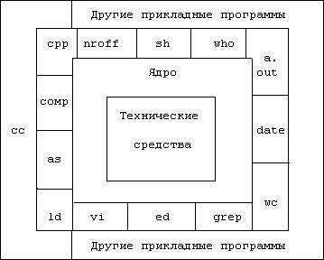
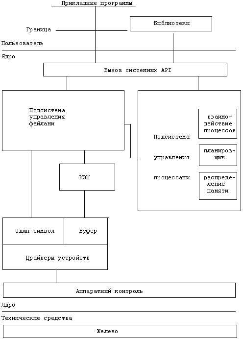

Архитектура UNIX и WindowsTanaT, 30.05.2003, Fcenter.ru
Архитектура
UNIX
Архитектура
Windows
Итог
"Чтобы найти истину, каждый должен хоть
раз в жизни освободиться от усвоенных
им представлений
и заново построить
систему своих взглядов"
- Рене
Декарт.
Статья, которая сейчас открыта в вашем браузере,
посвящена детальному рассмотрению архитектуры UNIX и Windows.
В ней мы постарались заглянуть внутрь этих двух операционных
систем, опустившись на уровень ядра. Без внимания не остались
и ошибки (исключения), которые могут возникнуть во время
работы ОС. В заключение мы попросили сравнить различия между
Windows и UNIX экспертов российской компании ASPLinux
(www.asplinux.ru), которым каждый день на практике приходится
сталкиваться с операционными системами на низком уровне.
Структуру UNIX проще всего представить в виде двух слоев.
Первым является ядро. Оно непосредственно взаимодействует с
железом и обеспечивает переносимость всего остального ПО на
компьютеры с разным аппаратным обеспечением. Ядро
предоставляет программам определенный набор системных API, с
помощью которых производятся создание процессов, управление
ими, их взаимодействие и синхронизация, а также файловый
ввод/вывод. Вторым слоем является программное обеспечение,
прикладное или системное: командный интерпретатор, графическая
оболочка и т. д.
 Структура ОС UNIX
Заглянем
глубже в ядро системы. Оно позволяет всем остальным программам
общаться с периферийными устройствами, регулирует доступ к
файлам, управляет память и процессами. Ядро - это связной, к
которому обращаются посредством системных вызовов (запрашивая
какую-то услугу). Связь эта - не односторонняя: ядро может и
возвращать в случае необходимости какие-то данные. Основным
достоинством ядра является строгая стандартизация системных
API. За счет этого во многом достигается переносимость кода
между разными версиями UNIX и абсолютно различным аппаратным
обеспечением.
 Структура ядра UNIX
Все
обращения к ядру системы можно разделить на две категории:
программа вызывает подсистему управления файлами или
подсистему управления процессами. Первая отвечает за все, что
связано с файлами: управление, размещение, доступ. Процессы же
- это, в общем случае, любые запущенные программы. Поэтому
подсистема управления процессами служит для их
жизнеспособности, синхронизации и управления. Важно так же и
то, что файловая подсистема и подсистема управления процессов
могут общаться друг с другом: любой процесс может вызывать
системные API для работы с файлами. Прелесть UNIX состоит в
том, что эти API универсальны (да и в Windows наблюдается та
же картина). Вот самые главные из них: open, close, read,
write, stat, chown, chmod (суть почти всех вызовов интуитивно
понятна из названия, кроме, разве что, последних трех, поэтому
поясню - они служат для управления атрибутами файлов,
информации о владельце и прав доступа) и др. Каждый из этих
системных вызовов в программе на языке С является обычной
функцией. Информацию по любому из них можно запросто найти в
man.
Подсистема управления файлами - почти единственная из
всех работает с драйверами, которые являются модулями ядра.
"Почти", потому что есть еще и сетевая подсистема, которая
работает, например, с драйвером сетевой карты и с драйверами
различных современных сетевых устройств. Ее, однако, мы
рассматривать не будем. Обмен данными с драйверами может
проходить двумя способами: с помощью буфера или потока. Суть
первого метода заключается в том, что для информации
выделяется кэш (или сверхоперативная память, как его называли
раньше), в который заносится необходимый блок данных. Далее
информация из кэша передается к драйверу. Драйвер -
единственный элемент ядра, способный управлять периферийными
устройствами. Но подсистема управления файлами может
взаимодействовать с драйвером и через поток. Поток
представляет собой посимвольную передачу данных драйверу.
Следует отметить, что способ взаимодействия с драйвером
определяется не пользователем и не приложением. Он является
характеристикой того устройства, которым управляет драйвер.
Очевидно, что потоковое общение позволяет взаимодействовать
более оперативно, чем общение через буфер. Ведь на заполнение
буфера тратится время и, следовательно, возрастает время
отклика.
Теперь более подробно рассмотрим подсистему
управления процессами. Она отвечает за синхронизацию и
взаимодействие процессов, распределение памяти и планирование
выполнения процессов. Для всех этих целей в подсистему
управления процессами включены три модуля, которые наглядно
продемонстрированы на схеме. Хорошим примером взаимодействия
подсистем управления файлами и процессами является загрузка
файла на исполнение. В этом случае подсистеме управления
процессов требуется обратиться к коллеге, чтобы считать
исполняемые файлы.
Чуть выше мы перечисляли системные
API для управления файлами. Теперь рассмотрим вызовы, служащие
для работы с процессами: fork (создает новый процесса), exec
(выполняет процесс), exit (завершает исполнение процесса),
wait (один из способов синхронизации), brk (управляет памятью,
выделенной процессу), signal (обработчики исключений) и
др.
Следующие два модуля являются очень важными в
понимании всей подсистемы управления процессами. Первый -
модуль распределения памяти, позволяет избежать нехватки
оперативной памяти. Хотя механизм свопинга и файлов подкачки
(технически правильно это, кстати, называется виртуальной
памятью) уже ни для кого не секрет, в тени остается другой
факт: операционная система (в лице описываемой подсистемы)
может либо скидывать все данные, относящиеся к конкретному
процессу, на диск, либо скидывать страницы памяти (страничное
замещение). Таким образом, модуль распределения памяти
выполняет очень важную функцию - он определяет какому процессу
сколько выделить памяти.
Виртуальная память была изобретена в 1962
году, в Англии при создании суперкомпьютера Atlas. В
большинстве современных компьютеров оперативная память не
так велика, как используемое процессором адресное
пространство. Размер ОЗУ типичного персонального компьютера
варьируется от десятков до сотен мегабайт. При запуске
программа загружается с какого-либо накопителя в оперативную
память. Если же программа не помещается в ОЗУ, то те её
части, которые в данный момент не выполняются, хранятся во
вторичном запоминающем устройстве, чаще всего винчестере, и
такая память называется виртуальной. Безусловно, перед
выполнением необходимая часть программы должна быть
перемещена в оперативную память. Данные функции выполняет
ядро операционной системы (диспетчер виртуальной памяти,
находящийся в микроядре). И для программы и для пользователя
эти действия прозрачны. Естественно, на запросы к
виртуальной памяти уходит гораздо большее время, нежели к
ОЗУ.
Второй модуль - планировщик. Его задача
не менее важна. UNIX - мультизадачная ОС, то есть одновременно
может выполняться множество процессов. Мы, однако, знаем, что
в фиксированный момент времени на одном процессоре может
выполняться только одна команда. Именно поэтому нужен
виртуальный рефери, который будет определять, какому процессу
исполняться сейчас, а какому - через секунду. На практике же
планировщик переключает контекст, то есть перед тем, как
остановить исполнение какого-то процесса, он запоминает
состояние регистров, памяти и т. д., а уже после этого
запускает другой процесс в его собственном адресном
пространстве. И еще один тонкий момент: каждый запущенный
процесс "думает", что он единственный. Дополнительно
существует механизм приоритетов. Очевидно, чем выше приоритет,
тем быстрее начнет исполняться процесс. Процессы могут также
обмениваться между собой информацией. В случае их синхронного
взаимодействия синхронизацию осуществляет модуль
взаимодействия (например, функция wait).
Вот мы и
подошли к последнему уровню - аппаратному контролю. На данном
уровне происходит обработка прерываний и связь ядра с железом.
Здесь следует отметить лишь пару моментов, во-первых,
прерывания могут "прерывать" работу процессора и требовать
внимания к себе (после этого процессор без проблем
возвращается к выполнению оставленных процессов), а,
во-вторых, обработку прерываний осуществляют специальные
функции ядра.
Windows 2000/XP построены на архитектуре
микроядра (microkernel architecture). ОС Windows 95/98
используют монолитное (monolithic) ядро. Микроядра являются
сравнительно небольшими и модульными. Благодаря последнему
новые устройства зачастую добавляются как модули, которые
можно загружать/выгружать на этапе исполнения без
перекомпиляции ядра. На архитектуре микроядра построены
также FreeBSD и Mac OS X. Монолитные же ядра используются
еще и в Linux. Они оптимизированы для более высокой
производительности с минимальными контекстными
переключениями. Такая архитектура упрощает поддержку кода
ядра для разработчиков, но требует перекомпиляции ядра при
добавлении новых устройств. Следует отметить, что описанные
здесь различия являются "классическими", на практике
монолитные ядра могут поддерживать модульность (что зачастую
и происходит), а микроядра могут требовать
перекомпиляции.
Структура Windows 2000/XP не отличается оригинальностью:
ядро системы (исполняется на максимально приоритетном уровне
процессора) и пользовательские подсистемы (исполняются на
минимально приоритетном уровне).
Ядро системы является
критичной частью кода, любые ошибки, происходящие в ядре,
приводят к фатальному краху системы - "синему экрану".
Фактически - это ошибки типа "Нарушение общей защиты". Как
только код ядра начинает обращаться в запрещенные для него
области памяти (попытка прочитать или записать данные,
исполнить неверную инструкцию, переход на запрещенную
область), срабатывает система защиты памяти процессора, и
управление передается системному обработчику исключений.
Обработчик исключений не может восстановить корректное
поведение кода. Все, что он делает - это вывод дампа на синий
экран с указанием типа ошибки и содержимого памяти в области,
где сработала защита.
Пользовательские подсистемы не столь
критично влияют на работу системы в целом, так как они
изолированы друг от друга и от ядра средствами управления
памятью и собственно процессором. Ошибки, возникающие в
приложениях, исполняются на уровне пользователя, то есть на
менее привилегированном уровне, нежели ядро. Поэтому, система
в состоянии контролировать процесс. При возникновении же
ошибки или сбоя управление передается обработчику ошибок,
который называется "Doctor Watson". Он принудительно завершит
приложение. Ядро системы и остальные подсистемы остаются в
целости и сохранности.
Ядро UNIX/Linux имеет два вида исключений,
которые обычно называют "oops" и "panic". Почти в каждой
операционной системе паника происходит в тех случаях, когда
ядро обнаруживает серьезную неисправность. Если система
каким-либо образом повредила сама себя, ей требуется
остановиться немедленно, пока она не произведет необратимых
критических изменений (типа уничтожения файловой системы).
Везде, где только возможно, UNIX/Linux пытается
детектировать проблему и справиться с ней без остановки всей
системы. Например, многие ситуации типа "oops" приводят к
завершению процесса, который нормально запустился, но потом
зациклил систему. Бывают, однако, ситуации, когда все
настолько плохо, что полная паника является наилучшим
выходом. Считается, что пользователи стабильных версий ядра
не должны встречать ни "паник", ни "oops". Но в реальном
мире они иногда происходят.
Недавно найденный
"TF-баг" (смотрите здесь) является
хорошим примером паники. Процессор пытается передать
управление процессу, которого не существует. Это приводит к
краху всей системы. В данном случае, у системы нет другой
альтернативы, чем запаниковать.
Ядро, поставляемое с
Red Hat Linux 7.3 (и некоторыми другими дистрибутивами),
содержит баг в файловой системе ext3. Эта ошибка приводит к
"oops", завершая время от времени некоторые процессы (также
этот баг приводит к замедлению всей системы). Хотя данная
ошибка уже исправлена (патч есть и в обновлении от Red Hat),
этот случай познакомил многих пользователей с ошибками типа
"oops".
Ядро Windows 2000/XP состоит из
нескольких системных компонентов, каждый из которых отвечает
за определенный набор задач. Основные компоненты ядра:
Микроядро (Microkernel) - компактный код, можно
сказать, сердце системы. В рамках микроядра работают
ключевые службы: диспетчер памяти, диспетчер задач и
другие.
Слой
абстрагирования (Hardware Abstraction Layer, HAL). Полностью
абстрагирует код системы от конкретного аппаратного
оборудования. Использование HAL позволяет обеспечить
переносимость 99% кода системы между различным
оборудованием.
Диспетчер
Ввода/Вывода (Input/Output Manager). Полностью контролирует
потоки обмена между системой и устройствами. Драйверы
устройств работают в контексте I/O Manager. Если драйвер
написан с ошибками и может привести к сбою - это вызовет
фатальный крах ядра и всей системы. 70% случаев фатальных
сбоев ("синий экран") - есть результат некорректного
поведения драйверов устройств.
Windows XP содержит
встроенный механизм контроля драйверов: правильно написанный
и тщательно протестированный драйвер поставляется с цифровой
подписью (Driver Signing). Правильная настройка системы
заключается в запрещении установки драйверов без корректной
подписи.
Модуль управления
объектами (Object Manager), управления виртуальной памятью
(Virtual Memory Manager), управления процессами (Process
Manager), управления безопасностью (Security Reference
Monitor), управления локальными вызовами (Local Procedure
Calls Facilities) - важные компоненты ядра системы подробно
рассматриваться не будут.
Наконец, особое по значению и важности место в ядре системы
занимает модуль графического интерфейса - Win32k.sys.
Фактически - это часть подсистемы Win32, отвечающая за
прорисовку и управление графическим интерфейсом. Этот модуль
расположен в ядре специально для того, чтобы существенно
повысить производительность графических операций ввода/вывода.
Однако размещение столь критической части в ядре накладывает
чрезвычайно строгие требования к корректности его исполнения.
Фактически, ошибка в коде Win32k.sys приведет к краху системы.
Разработчики Windows уделяют огромное внимание этому модулю, и
именно он наиболее тщательно протестирован. Опыт эксплуатации
систем Windows показывает, что код Win32k.sys работает
абсолютно корректно и не содержит фатальных ошибок. Однако
некорректный драйвер видеосистемы может все
испортить.
В Windows также реализованы дополнительные
функции для повышения стабильности работы ОС. Система защиты
файлов Windows автоматически предотвращает случайные изменения
системных файлов операционной системы, вносимые пользователем
или приложениями, эффективно защищая всю систему в целом. То
есть, когда какая-то программа внесла изменения или просто
заменила системные файлы Windows, считая, что у программы
более новые, Windows отслеживает изменения и уведомляет об
этом пользователя, говоря, что для стабильности системы
желательно восстановить исходные файлы. Так же существует
поддержка нескольких версий DLL, что повышает совместимость
приложений и повышает стабильность.
Различия между Windows и UNIX для нас прокомментировали
разработчики из компании ASPLinux.
"Операционные системы Unix и Windows
достаточно сильно отличаются в реализации различных сервисов
и служб. В соответствии с темами, затронутыми в этой статье,
можно отметить несколько глобальных различий.
В
Unix/Linux графическая система существует отдельно от ядра и
функционирует как обычное приложение. В операционных
системах Windows графическая система интегрирована в ядро. В
случае использования операционной системы на рабочей
станции, особенно при запуске графикоемких приложений,
возможно, лучше, когда графическая система входит в ядро - в
этом случае она может быстрее работать. А при работе на
сервере предпочтительней отделение графической системы от
ядра ОС, так как она загружает память и процессор. В случае
Unix/Linux графическую систему можно просто отключить, к
тому же, если системный администратор ее все-таки хочет
использовать, в Linux есть несколько графических оболочек на
выбор, некоторые из них (например, WindowMaker) достаточно
слабо загружают машину. Эта же особенность Unix-образных
операционных систем позволяет запускать эти ОС на машинах с
весьма скромными объемами ОЗУ и т.п. В случае Windows же
графическая система слишком тесно интегрирована в ОС,
поэтому она должна запускаться даже на тех серверах, на
которых она вовсе не нужна.
Отметим также методику
разделения прав доступа в Windows 2000 и Unix/Linux. В
первом - разделение прав доступа основано на ACL (access
control lists), то есть, к примеру, можно настроить систему
таким образом, чтобы администратор не имел возможности
управлять файлами пользователей. У Unix/Linux же всегда есть
суперпользователь - root, который имеет доступ абсолютно ко
всему. То есть теоретически модель безопасности в Windows
лучше: чтобы полностью завладеть хорошо настроенной системой
Windows, хакеру придется ломать больше, в Unix/Linux же
достаточно взломать доступ к root. (В Unix/Linux
используются более старые технологии, тем не менее,
некоторые дистрибутивы Linux сейчас начинают поддерживать
ACL, среди них - ASPLinux 7.3 Server Edition). Но теория
несколько смазывается практикой с той стороны, что в Windows
не так быстро, как в Linux, заделываются "дыры", что уже
относится к плюсам открытой модели разработки. В результате
оказывается, что в Windows по статистике больше дыр, через
которые злоумышленник может пробраться в систему. Но, опять
же, точно о количестве дыр в Linux и Windows можно будет
сказать только тогда, когда количество пользователей обоих
видов ОС будет примерно одинаковым.
В Linux
поддерживаются несколько файловых систем, наиболее
продвинутые - это Ext2, Ext3, XFS. ОС Windows завязана по
большому счету на одну файловую систему - NTFS или FAT 32.
Файловые системы Ext2, Ext3, XFS по оценкам работают
быстрее. Принципиальное же отличие в том, что в UNIX/Linux
вообще нет понятия диска, физического или логического. Вся
работа с устройствами хранения данных организуется через
специальные файлы устройств, которые отображают физический
носитель (диск, лента и т. п ) или его части (разделы) в
файловую систему.
Важное отличие - наличие в Windows
технологии ActiveX, нечто подобное в Unix/Linux реализуется
с помощью CORBA и Bonobo. Эта технология, с одной стороны,
предоставляет пользователю множество удобств, с другой
стороны - она же допускала в свое время такие вещи, как
автоматический запуск Outlook'ом вируса, пришедшего по
почте. Одно из важных отличий этих технологий в том, что
элементы ActiveX могут внедряться в текст HTML, что имеет
как ряд достоинств, так и недостатков.
Можно
перечислить еще ряд отличий Unix-подобных операционных
систем от Windows, например, встроенную поддержку удаленного
доступа в Unix и отсутствие оной в Windows по умолчанию (она
реализуется в серверных версиях Windows, а также с помощью
дополнительных средств, например, Citrix). В Unix/Linux и
Windows сильно различаются сетевые подсистемы (IP-stack), по
ряду оценок сетевая подсистема Unix/Linux
эффективнее.
Можно было бы упомянуть богатый набор
ПО, которое может поставляться вместе с Linux, между тем,
Windows также развивается в этом направлении. Дополнительные
отличия же в архитектуре в основном сводятся к отличиям
работы монолитных и модульных ядер, которые также зачастую
не являются преимуществами или недостатками, а просто
отличиями. При всем при этом можно с уверенностью сказать,
что характеристики работы Windows или Linux гораздо больше
зависят от аккуратности и квалификации пользователя, чем от
архитектуры той или иной ОС".
Мы искренне
надеемся, что нам удалось описать основные различия двух
систем. Если вы считаете, что какой-то аспект "анатомии"
Windows или UNIX незаслуженно пропущен, милости просим в наш
форум. Автор статьи (e-mail в начале) с удовольствием
выслушает все ваши
мысли.
| |
Источник - LinuxBegin.ru
http://linuxbegin.ru/
Адрес этой
статьи:
http://linuxshop.ru/linuxbegin/article351.html
|